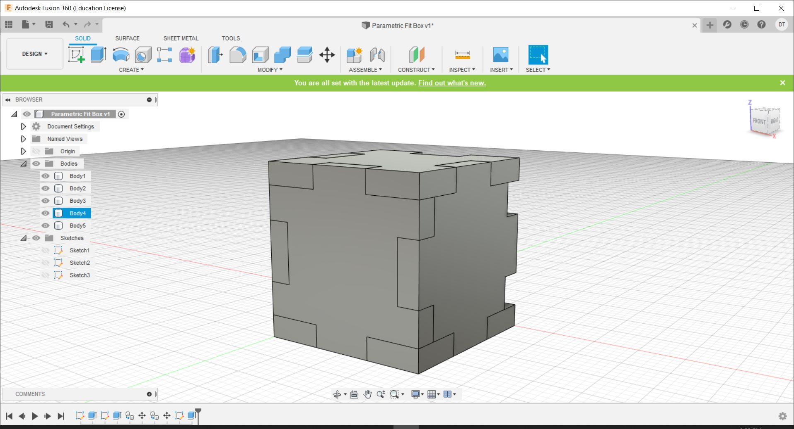

Introduction
Computer Controlled Cutting is the practise of using Ccmputer Software to cut shapes from Vector and Raster graphics using laser cutting, waterjet, knife, hot-wire, and wire EDMs. In this case, we will be learning to use
Laser Cutters specifically, and how to navigate the software needed to use a laser cutter. Laser Cutters cut using the amplification of light and are typically used for industrial manufacturing, but are increasingly used
by schools, small businesses and hobbyists.
Software
Computer Assisted Design
- Fusion 360
- Gimp
- Blender
- Illustrator
- Photoshop
Laser Cutter Applications
- Cutting, marking or engraving
- - Raster
- Vector
- Screen printing
- - Halftone
- Holes
- Path
- Press-fit construction
- Factors to consider
- - Kerf
- Chamfer and joints
- Parametric design
- Flexures and living hinges
Laser Safety
- Ensure Class 1 w/safety interlock
- Venting of fumes
- Regular cleaning of laser optics
- Supervision must be present at all times
- Adequate air/gas flow must be observed
- Prohibied materials should not be used
- Fires during operation
- E-stop and fire-extinguisher should be present
Materials
Laserable
- Cardboard
- Wood
- Acrylic
- Delrin
- Fabric
- Ceramic
- Glass
Prohibited
- PVC
- Pleather
- Moleskin
- Polycarbonate/Lexan
- HDPE
- Polystyrene foam
- Fiberglass
- Carbon fiber
- Butane/Gas
Flame Test: If it flames, it should not be cut

Laser Settings
Why are Laser settings important to take note of? The various settings can affect the end result in various ways, as listed below:
- Power
- -Higher Power burns deeper
Too much or too little power sacrifices detail on the end result
- Speed
- -Higher Speed saves time, but burns shallower
-Setting the speed too high or low reduces detail
- Frequency (Measured in PPI)
- -Frequency is measured as Pulses per inch of travel
-Higher Frequency results in an increased burning/melting effect
-Frequency for Acrylic should be set in the range of 500-1000
-Frequency for cutting Wood should be set to 100-500
- Rule of Thumb
- -Doubling Power doubles the depth of the cut
-Halving speed doubles the depth of the cut
- A good starting point for settings is always the ones recommended by the vendor
- For example, in the case of Epilog, they have settings such as the ones shown below for acrylic and wood.

As a practise for this, we were assigned to create a parametric test fit kit, with the specifications of 20mm x 20mm x 20mm box, cut from 2.6mm thickness plywood to be assembled with no glue.
The first step was to create the bottom face of the box, which starts with a sketch of a square.
The second step is to add the notches and parts where the other faces will fit in by modifying them and adding it into the sketch.
After doing that, extrude the sketch by the thickness of the wood to get the bottom piece.
Next, we need to make the side pieces, which can be involve making another sketch on the slot like so.
After which, we can extrude it again in a similar fashion to get our next piece. In the extrude menu, new body needs to be selected otherwise it will fuse to the bottom piece.
We can now duplicate this body and move it to the other side.
The next thing to do is to duplicate the base to the top as well.
Next, we need to trace out the areas that have not been filled in with a sketch for the final faces.
After this, you simply extrude like before.

And to finish it, duplicate it onto the other side.

The design shown here can be found here: